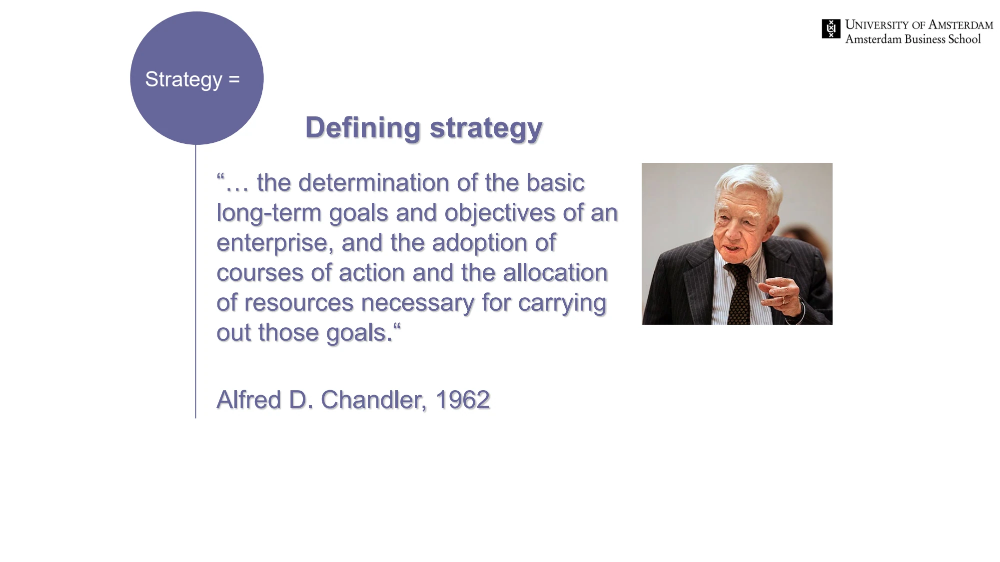

The framework
| Stage | What it contains | What to establish |
|---|---|---|
| Strategic inputs | External environment, internal organization, vision and mission. | What situation are we in, what matters and what capabilities can we draw on? |
| Formulation | Business-level, corporate-level, international and cooperative strategy; competitive dynamics and acquisition choices. | Where and how will we compete, and which activities belong inside the firm? |
| Implementation | Leadership, governance, organizational structure and control, entrepreneurship. | Who will act, with what authority, resources and incentives? |
| Renewal and feedback | Reassessment of assumptions, capabilities and results. | What should continue, change or stop? |
Key distinctions
Three levels of strategy
Corporate-level strategy concerns the scope and direction of the whole company and the coordination of its businesses. Business-level strategy concerns competition within a particular market. Functional strategies translate these choices into areas such as marketing, operations and human resources. A decision at one level can enable or constrain decisions at the others.
Whose value?
The opening lecture asks whether value is assessed for shareholders or for a wider set of stakeholders. Making that criterion explicit matters: a plan cannot be assessed coherently if its objectives keep changing during the analysis.
How to use it
- Write the strategic question and the desired outcome before selecting a framework.
- Connect each recommendation to a resource commitment and an implementation mechanism.
- Review performance and assumptions together, feeding learning back into the diagnosis.
Keep in mind
The diagram is an organizing model, not a guarantee that strategy unfolds in a clean sequence. Formulation and action often interact.
What separates formulation from implementation?
Reveal the explanation
Formulation selects direction and strategic choices; implementation establishes the actions and organizational arrangements needed to realize them.
Read the classroom original
Complete pages from the supplied lecture slides. Select a page to read, enlarge or browse its extracted text. Page numbers refer to the PDF’s physical page order.
